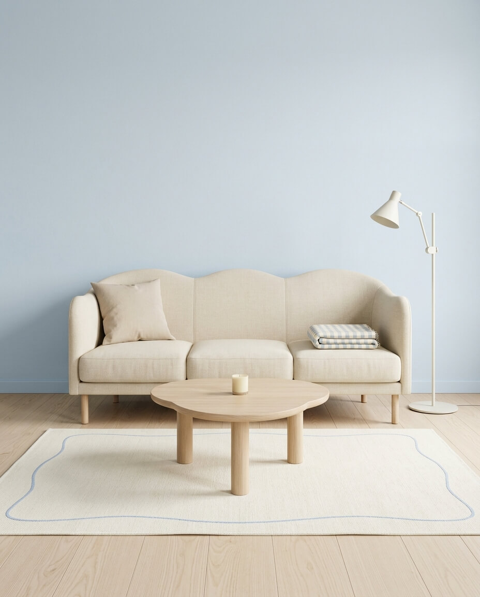

Every clean counts.
Log a cleanup in a few taps, or track a live session while you make your space feel good again.
A LITTLE CARE GOES A LONG WAY
A quick reset. A fresh start. Chisto helps you find a cleaning rhythm that fits your life—and see the care you put in.
No ads. No account to create. Just your home.

Your home
is breathing easy.
LESS PRESSURE. MORE PROGRESS.
You don’t need a perfect routine. Just a little rhythm to come back to.
Log a cleanup in a few taps, or track a live session while you make your space feel good again.
Choose a rhythm for your home. Gentle reminders help you return to it, one small reset at a time.
Look back through your history, follow your streaks, and collect awards for showing up.
MAKE YOURSELF AT HOME
Soft and bright, warm and quiet, or full of character. Three included styles make Chisto your own.
Try a style. Watch the whole page settle into it.
RIGHT THERE WITH YOU
Start, pause, and finish a cleaning workout on Apple Watch. Use the timer without Health access, or connect Apple Health for workout tracking.
Home Screen widgets and Watch complications put your home’s state and rhythm a glance away.
Cleaning records can sync through your private iCloud account. Manual logging works without Health access.
A LITTLE HELP, WHEN YOU NEED IT
Have a question about Chisto or something to share? Get in touch.
Contact supportNo. The cleaning timer, manual logging, reminders, styles, and progress work without Health access. Connect Health if you want workout tracking and choose to save sessions there.
Fresh Linen, Quiet Wood, and Studio Loft are included. Additional styles are available as optional one-time purchases.
The upcoming iPhone release requires iOS 27 or later. The companion Watch app requires watchOS 27 or later.